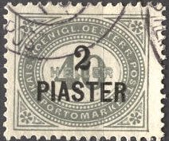

Return To Catalogue - Austria overview - Turkey - Austrian Post Offices in the Turkish Empire, part 1
Note: on my website many of the
pictures can not be seen! They are of course present in the
catalogue;
contact me if you want to purchase the catalogue.
Austrian Post Offices in the Turkish Empire, part 1
8 pa on 2 k brown 10 pa on 3 k green 20 pa on 5 k red 1 Pi on 10 k blue 2 Pi on 20 k grey (Franz Joseph in an ellipse) 2 Pi on 20 k grey (Franz Joseph in an octogonal, 1891) 5 Pi on 50 k lilac (Franz Joseph in an ellipse) 5 Pi on 50 k lilac (Franz Joseph in an octogonal, 1891) Larger size

10 Pi on 1 G blue 10 Pi on 1 G violet 20 Pi on 2 G red 20 Pi on 2 G green
Value of the stamps |
|||
vc = very common c = common * = not so common ** = uncommon |
*** = very uncommon R = rare RR = very rare RRR = extremely rare |
||
| Value | Unused | Used | Remarks |
| 8 pa on 2 k | c | c | |
| 10 pa on 3 k | c | c | |
| 20 pa on 5 k | c | c | |
| 1 Pi on 10 k | c | vc | |
| 2 Pi on 20 k | ** | *** | Elliptic design |
| 2 Pi on 20 k | c | c | Octogonal design |
| 5 Pi on 50 k | *** | *** | Elliptic design |
| 5 Pi on 50 k | * | * | Octogonal design |
| 10 Pi on 1 G blue | ** | ** | |
| 10 Pi on 1 G violet | ** | ** | |
| 20 Pi on 2 G red | *** | *** | |
| 20 Pi on 2 G green | *** | *** | |


10 pa on 5 h green 20 pa on 10 h red 1 Pi on 25 h blue 2 Pi on 50 h blue Larger size


5 Pi on 1 K red 10 Pi on 2 K violet 20 Pi on 4 K green
Value of the stamps |
|||
vc = very common c = common * = not so common ** = uncommon |
*** = very uncommon R = rare RR = very rare RRR = extremely rare |
||
| Value | Unused | Used | Remarks |
| 10 pa on 5 h | c | c | Exists with varnish bars |
| 20 pa on 10 h | c | c | Exists with varnish bars |
| 1 Pi on 25 h | c | c | Exists with varnish bars |
| 2 Pi on 50 h | c | c | Exists with varnish bars |
| 5 Pi on 1 K | * | c | |
| 10 Pi on 2 K | * | * | |
| 20 Pi on 4 K | * | * | |


10 pa green 20 pa red 30 pa violet 1 Pi blue 2 Pi blue
All the above stamps (except 30 pa), exist with varnish bars.
Value of the stamps |
|||
vc = very common c = common * = not so common ** = uncommon |
*** = very uncommon R = rare RR = very rare RRR = extremely rare |
||
| Value | Unused | Used | Remarks |
| 10 pa | c | c | |
| 20 pa | c | c | |
| 30 pa | c | c | |
| 1 Pi | c | c | |
| 2 Pi | * | c | |


10 pa green on yellow 20 pa red 30 pa brown on yellow 60 pa violet on blue 1 Pi blue on blue 2 Pi red on yellow 5 Pi brown on grey 10 Pi green on yellow 20 Pi blue on grey
Value of the stamps |
|||
vc = very common c = common * = not so common ** = uncommon |
*** = very uncommon R = rare RR = very rare RRR = extremely rare |
||
| Value | Unused | Used | Remarks |
| 10 pa | c | c | |
| 20 pa | c | c | |
| 30 pa | c | c | |
| 60 pa | c | * | |
| 1 Pi | * | c | |
| 2 Pi | c | c | |
| 5 Pi | c | c | |
| 10 Pi | * | c | |
| 20 Pi | * | * | |

10 pa on 5 h green 20 pa on 10 h green 1 Pi on 20 h green 2 Pi on 40 h green 5 Pi on 100 h green
These stamps exist with various perforations.
Value of the stamps |
|||
vc = very common c = common * = not so common ** = uncommon |
*** = very uncommon R = rare RR = very rare RRR = extremely rare |
||
| Value | Unused | Used | Remarks |
| 10 pa on 5 h | c | * | |
| 20 pa on 10 h | * | * | |
| 1 Pi on 20 h | * | * | |
| 2 Pi on 40 h | * | * | |
| 5 Pi on 100 h | * | * | |
(reduced sizes)
1/4 Pi green 1/2 Pi green 1 Pi green 1 1/2 Pi green 2 Pi green 5 Pi green 10 Pi green 20 Pi green 30 Pi green
These stamps are perforated 12 1/2. Specialists distinghuish stamps printed on glazed and normal paper, and stamps printed on thick and thin paper.
Value of the stamps |
|||
vc = very common c = common * = not so common ** = uncommon |
*** = very uncommon R = rare RR = very rare RRR = extremely rare |
||
| Value | Unused | Used | Remarks |
| 1/4 Pi | * | * | |
| 1/2 Pi | c | * | |
| 1 Pi | * | * | |
| 1 1/2 Pi | c | * | |
| 2 Pi | * | * | |
| 5 Pi | c | * | |
| 10 Pi | ** | *** | |
| 20 Pi | ** | R | |
| 30 Pi | ** | ** | |
Other stamps in the same design, but in red and with only inscription "PORTO" were issued for Austria.